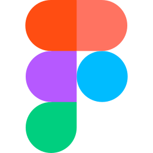

Ferramentas
Introdução
Para garantir uma melhor organização, comunicação e produção de artefatos ao longo do desenvolvimento do projeto, foi realizado um levantamento das principais ferramentas que serão utilizadas pela equipe. A Tabela 1 apresenta essas ferramentas, bem como suas respectivas finalidades e aplicações previstas durante a execução do projeto.
Ferramentas Utilizadas
Tabela 1 - Ferramentas Utilizadas no Projeto
| Logo | Ferramenta | Finalidade |
|---|---|---|
 |
GitHub | Organização, versionamento e documentação de artefatos produzidos para o projeto.1 |
| Discord | Realização de reuniões e de apresentações.2 | |
| Teams | Realização de reuniões e de apresentações.3 | |
| OBS | Gravação de vídeos.4 | |
 |
Figma | Produção de artefatos gráficos.5 |
| MkDocs | Criação das páginas de documentação.6 | |
 |
Visual Studio Code | Edição dos arquivos de documentação.7 |
 |
Comunicação do time e agendamento de tarefas.8 | |
 |
YouTube | Hospedagem de vídeos produzidos.9 |
 |
Google Planilhas | Criação de planilhas relacionadas ao cronograma e horários.10 |
 |
Google Docs | Criação e edição de tabelas e arquivos.11 |
 |
ChatGPT | Criação de imagens falsas para as personas.12 |
| CapCut | Edição de vídeos.13 |
Referências Bibliograficas
1. GitHub. Disponível em: https://docs.github.com/pt. Acesso em: 12 de abr. de 2025.
2. Discord. Disponível em: https://discord.com/company. Acesso em: 12 de abr. de 2025.
3. Microsoft Teams. Disponível em: https://www.microsoft.com/pt-br/microsoft-teams/group-chat-software. Acesso em: 12 de abr. de 2025.
4. OBS Studio. Disponível em: https://obsproject.com/pt-br. Acesso em: 12 de abr. de 2025.
5. Figma. Disponível em: https://www.figma.com. Acesso em: 12 de abr. de 2025.
6. MkDocs. Disponível em: https://www.mkdocs.org. Acesso em: 12 de abr. de 2025.
7. Visual Studio Code. Disponível em: https://code.visualstudio.com. Acesso em: 12 de abr. de 2025.
8. WhatsApp. Disponível em: https://www.whatsapp.com/?lang=pt_br. Acesso em: 12 de abr. de 2025.
9. YouTube. Disponível em: https://about.youtube. Acesso em: 12 de abr. de 2025.
10. Google Planilhas. Disponível em: https://www.google.com/intl/pt-BR/sheets/about. Acesso em: 12 de abr. de 2025.
11. Google Docs. Disponível em: https://www.google.com/intl/pt-BR/docs/about. Acesso em: 12 de abr. de 2025.
12. ChatGPT. Disponível em: https://openai.com/index/chatgpt. Acesso em: 12 de abr. de 2025.
13. CapCut. Disponível em: https://www.capcut.com. Acesso em: 13 de abr. de 2025.
Histórico de Versões 📅
| Versão | Data | Descrição | Autor(es) | Revisor(es) |
|---|---|---|---|---|
1.0 |
12/04/2025 | Criação da página de ferramentas | Victor Pontual | Danielle Soares |
1.1 |
12/04/2025 | Adição de ferramentas (CapCut) | Eduardo de Pina | Marcelo Makoto |